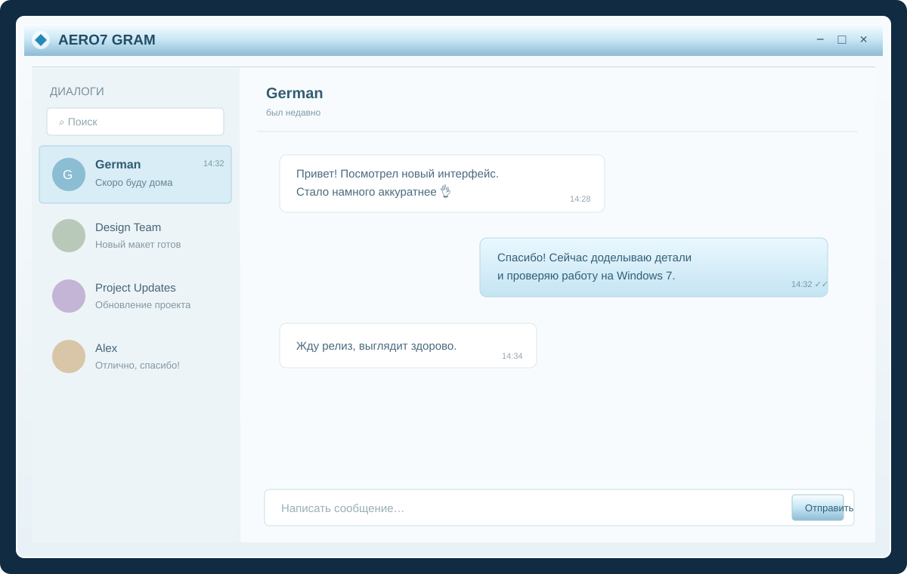
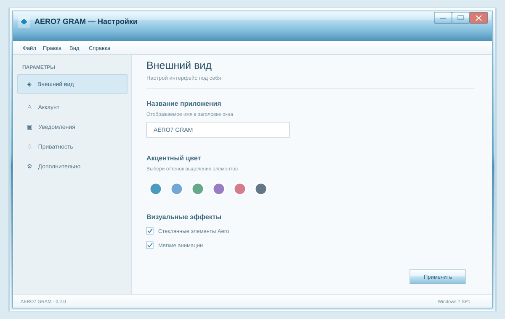

Диалоги и сообщения
Основа переписки: список чатов, история и отправка текстовых сообщений.
Знакомый мессенджер в эстетике Windows 7 — стекло, свет, чистые линии и внимание к деталям. Нативное приложение для тех, кто скучает по настоящему Aero.
Мы не пытаемся превратить весь сайт или приложение в копию системного окна. Вместо этого берём лучшее из визуального языка Aero — прозрачность, мягкий свет, прохладные оттенки и аккуратные детали — и соединяем с удобным современным интерфейсом.
AERO7 GRAM создаётся как нативный Telegram-клиент на C++ и Qt Widgets. За подключение к Telegram отвечает TDLib.
Основа переписки: список чатов, история и отправка текстовых сообщений.
Интеграция с официальной библиотекой TDLib, а не имитация мессенджера.
Стеклянные акценты, светлые поверхности и характерная палитра Windows 7.
Название приложения и акцентные темы с сохранением настроек.
Qt Widgets, системное окно и интеграция с Windows, без браузерной оболочки.
Исходный код доступен публично. Без встроенной рекламы и собственной аналитики.
Сейчас реализован начальный путь авторизации и текстовой переписки через TDLib. Медиа, контакты, поиск, уведомления и другие функции ещё предстоит довести до рабочего состояния.
Первые концепты экранов AERO7 GRAM. Это визуальные примеры направления, а не скриншоты уже готовой программы.


Не буквальная копия Windows, а собственный интерфейс с её узнаваемым характером: стеклянные акценты, мягкие градиенты, чистая типографика и деликатные блики.
Проект не должен собирать данные о пользователе ради аналитики или рекламы.
База TDLib хранится в профиле пользователя. Ключ базы на Windows защищается DPAPI.
В проект не закладываются рекламные блоки, скрытые трекеры и собственная аналитика.
Открыто указываем, что уже работает, что ещё разрабатывается и что не проверено.
Обычные облачные чаты Telegram не имеют сквозного шифрования по умолчанию. Для E2E-шифрования предназначены Secret Chats. Подробнее в FAQ Telegram ↗
Планируются отдельные сборки для Windows 7 SP1 x64 и x86.
Для 64-битных систем · AMD64
Для 32-битных систем · Win32
Готовые сборки ещё не опубликованы. Кнопки ведут на GitHub Releases. Файлы появятся после сборки и проверки обеих архитектур на Windows 7 SP1. Не скачивай неофициальные сборки с посторонних сайтов.
Без обещаний того, чего ещё нет. Работа идёт постепенно — от основы к полноценным функциям.